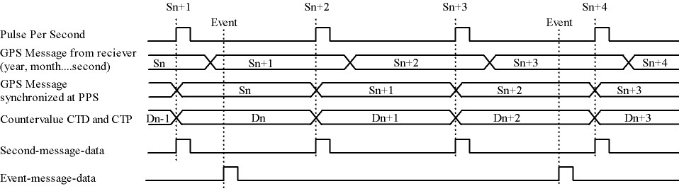
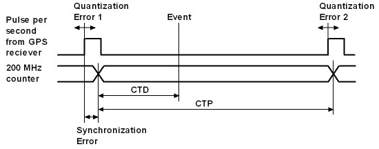
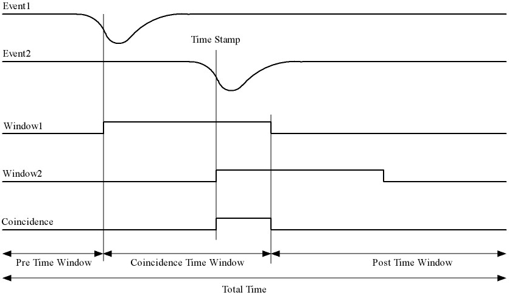

Message Structures HiSPARC¶
The HiSPARC electronics communicate to the PC using structured messages. These message structures are described on this page.
Dataflow example¶
In normal operation the electronics receive synchronization pulses from the GPS called the Pulse Per Second (PPS). The time between PPS is counted by the internal 200 MHz clock, the value is reset at each PPS and the final value is called the Count Ticks between PPS (CTP). When the PPS occurs the HiSPARC electronics sends a one second message to the PC containing the CTP value. When a trigger occurs the clock counter is also stored, this value is called the Count Ticks to Data (CTD). This is sent to the PC in a measured data message. An example of the order of these messages and their relation to the GPS clock and internal clock is shown in the following figure.
Successive data to PC¶
| Message to PC | Counter (200 MHz) | Actual time | Time stamp in message |
|---|---|---|---|
| One second | End value CTP of Dn-1 | Sn+1 | Sn |
| Measurement data | Momentary value CTD of Dn | Sn+1 | Sn |
| One second | End value CTP of Dn | Sn+2 | Sn+1 |
| One second | End value CTP of Dn+1 | Sn+3 | Sn+2 |
| Measurement data | Momentary value CTD of Dn+2 | Sn+3 | Sn+2 |
| One second | End value CTP of Dn+2 | Sn+4 | Sn+3 |
Note
The time stamps in the messages are offset by one second. This is because the Primary Timing Packet containing the GPS time stamp information is sent by the GPS module to the electronics up to 20 ms after the PPS. This is taken into account when calculating the exact event time, see (1).
How to calculate the right event time¶
When a measured data message is received by the PC it needs to wait two more seconds before it can accurately calculate the GPS timestamp of the event. This is because two one second messages of the following PPS’s are required. These contain the CTP, \(\Delta t_{\mathrm{Q1}}\), and \(\Delta t_{\mathrm{Q2}}\). The one second message before the measured data message (i.e. with the same time stamp) contains the Sn and \(\Delta t_{\mathrm{Sync}}\).
The electronics generates event-message-data and second-message-data. The event-message-data is labeled on second basis by the GPS time stamp. To get the event time in nanosecond accuracy, the following has to be done. Take for example an event measured in time Sn (second n). The event-data contains a CTD value. This is the counter value of the system 200 MHz counter latched at the incomming event. The CTD value represents the number of 5 ns steps from a PPS (Pulse Per Second) signal till the incomming event. A PPS signal comes every second from the GPS reciever. First the ratio between CTD and CTP has to be calculated. CTP is the end value of the 200 MHz counter at the moment of a PPS signal. The CTP value belonging to the CTD value of Sn comes in the second-message-data of Sn+1. This ratio has to be multiplied with a “real” second expressed in nanoseconds. The time between two PPS signals should be exactly one second. Unfortunately the PPS signals have a time error with respect to a “world second”. This error is called the quantization error and can be read from the second-message-data. The quantization errors for event-message-data Sn are in second-message-data Sn+1 (Quantization error 1) en second-message-data Sn+2 (Quantization error 2). Now the ratio CTD/CTP can be expressed in nanoseconds and has to be add with a time offset. The time offset is the sum of the first quantization error and a synchronization error. By synchronizing the asynchrone PPS signal with the 200 MHz counter a synchronization error is made. This could be an error of maximal 5 ns. This is reduced to 2.5 ns by clocking the least significant bit of the counter on the negative edge of the 200 MHz system clock also. The highest bit (bit31) of CTP in the second-message-data indicates if the time offset has to be adjust with 2.5 ns. The synchronization error for event-message-data Sn is in second-message-data Sn.
HiSPARC messages¶
General message structure¶
| Header | Identifier | Message info | Data | End |
|---|---|---|---|---|
| 99 | 1 byte | N bytes | N bytes | 66 |
A message always starts with a header byte (99h) followed by an identifier byte, message info, data and an end byte (66h). The identifier byte gives the type of the message. Types are e.g. GPS time, measurement data, control setting etc. The message info bytes give some information about the data. Message info can be trigger information or time settings. In case of a control setting this information is omitted (N = 0). The number of data bytes depends on the type. In case of a control setting it will be a few bytes and in case of measured event data it can be a few thousand bytes.
One second message¶
Every second on a pulse per second signal (1PPS) from the GPS receiver, the HiSPARC electronics sends a message to the computer. The time information is used for calibration. This message contains also the number of times that an analog input signal went over a threshold level during 1 second. After these bytes, 61 bytes of satellite signal information are sent.
One second structure¶
| Header | Identifier | GPS time stamp | CTP | Quantization Error | Threshold Counters Over threshold information | Satellite signal information | End |
|---|---|---|---|---|---|---|---|
| 99 | A4 | 7 bytes | 4 bytes | 4 bytes | 8 bytes | 61 bytes | 66 |
The GPS Time stamp is data from the GPS receiver and will be renewed every second.
GPS Time stamp structure¶
| Day | Month | Year | Hours | Minutes | Seconds |
|---|---|---|---|---|---|
| 1 byte | 1 byte | 2 bytes | 1 byte | 1 byte | 1 byte |
CTP¶
CTP is a counter value. CTP represents the number of clock periods of the 200 MHz clock between two PPS signals. This value will be renewed every second. It will be set to one on a PPS signal and counts up in 5 ns steps till the next PPS signal. On a PPS signal this value is stored and set to one again.
Quantization Error¶
This field carries the PPS quantization error in units of nanoseconds. This is the quantization error for the previous PPS.
Threshold counters over threshold information¶
| Threshold Counters | |||
|---|---|---|---|
| Channel 2 | Channel 1 | ||
| high | low | high | low |
| 2 bytes | 2 bytes | 2 bytes | 2 bytes |
Satellite signal information¶
| Number of tracked satellites | Satellite number 1 | Signal level 1 | Satellite numbers and levels 2 to 11 | Satellite number 12 | Signal level 12 |
|---|---|---|---|---|---|
| 1 byte | 1 byte | 4 bytes | 50 bytes | 1 byte | 4 bytes |
Measured data message¶
On a coincidence of a chosen event pattern measured data will be sent to the computer as follows.
Measurement data structure¶
| Header | Identifier | Trigger condition | Trigger pattern | Pre trigger time window | Trigger time window | Post trigger time window | GPS time stamp | CTP | Data | End |
|---|---|---|---|---|---|---|---|---|---|---|
| 99 | A0 | 1 byte | 2 bytes | 2 bytes | 2 bytes | 2 bytes | 7 bytes | 4 bytes | N bytes | 66 |
Trigger condition¶
The trigger condition byte is set by LabView. The content of this byte selects a pattern that allows a coincidence of the input event signals which go over threshold. Every input signal can be discriminated with two threshold levels; a low- and a high level. A HiSPARC electronic unit has two inputs. Two units can be combined as a master and a slave. Therefore combinations can be made of eight input signals over threshold voltages (threshold signals). There are four high signals and four low signals. If a slave is not present, the high and low signals from the slave are zero. A coincidence can also be forced with an external trigger signal. The trigger condition of threshold signals is selected with bit 0 to 5 of the trigger matrix byte. The external trigger is selected with bit 6. The most significant bit selects the calibration mode. When this bit is active, the other 7 bits are omitted. If a signal goes above the high threshold, then of course it also goes above the low threshold. Therefore if the condition is e.g. “at least two low signals”, then this means that the condition is also met when there is one signal low and one high. Or if there are two high signals. Or when there is one high signal and two low ones, etc.
| Trigger condition | Description trigger condition | ||
|---|---|---|---|
| 00 000 001 | 0H and 1L | Tr. con. 1 | At least one low signal |
| 00 000 010 | 0H and 2L | Tr. con. 2 | At least two low signals |
| 00 000 011 | 0H and 3L | Tr. con. 3 | At least three low signals |
| 00 000 100 | 0H and 4L | Tr. con. 4 | At least four low signals |
| 00 001 000 | 1H and 0L | Tr. con. 5 | At least one high signal |
| 00 001 001 | 1H and 1L | Tr. con. 6 | At least one high signal and at least one other low |
| 00 001 010 | 1H and 2L | Tr. con. 7 | At least one high signal and at least two others low |
| 00 001 011 | 1H and 3L | Tr. con. 8 | At least one high signal and at least three others low |
| 00 010 000 | 2H and 0L | Tr. con. 9 | At least two high signals |
| 00 010 001 | 2H and 1L | Tr. con. 10 | At least two high signals and at least one other low |
| 00 010 010 | 2H and 2L | Tr. con. 11 | At least two high signals and at least two others low |
| 00 011 000 | 3H and 0L | Tr. con. 12 | At least three high signals |
| 00 011 001 | 3H and 1L | Tr. con. 13 | At least three high signals and at least one other low |
| 00 100 000 | 4H and 0L | Tr. con. 14 | All four signals high |
| 00 001 100 | 1H or 1L | Tr. con. 15 | At least one high signal or at least one other low |
| 00 001 101 | 1H or 2L | Tr. con. 16 | At least one high signal or at least two others low |
| 00 001 110 | 1H or 3L | Tr. con. 17 | At least one high signal or at least three others low |
| 00 001 111 | 1H or 4L | Tr. con. 18 | At least one high signal or all four others low |
| 00 010 100 | 2H or 1L | Tr. con. 19 | At least two high signals or at least one other low |
| 00 010 101 | 2H or 2L | Tr. con. 20 | At least two high signals or at least two others low |
| 00 010 110 | 2H or 3L | Tr. con. 21 | At least two high signals or at least three others low |
| 00 010 111 | 2H or 4L | Tr. con. 22 | At least two high signals or all four others low |
| 00 011 100 | 3H or 1L | Tr. con. 23 | At least three high signals or at least one other low |
| 00 011 101 | 3H or 2L | Tr. con. 24 | At least three high signals or at least two others low |
| 00 011 110 | 3H or 3L | Tr. con. 25 | At least three high signals or at least three others low |
| 00 011 111 | 3H or 4L | Tr. con. 26 | At least three high signals or all four others low |
| 00 100 100 | 4H or 1L | Tr. con. 27 | All four signals high or at least one other low |
| 00 100 101 | 4H or 2L | Tr. con. 28 | All four signals high or at least two others low |
| 00 100 110 | 4H or 3L | Tr. con. 29 | All four signals high or at least three others low |
| 00 100 111 | 4H or 4L | Tr. con. 30 | All four signals high or all four others low |
| 01 000 000 | Tr. con. 31 | Use external trigger only | |
| 01 xxx xxx | Tr. con. 32 | Use external trigger and selected trigger condition given by the xxx xxx | |
| 1x xxx xxx | Tr. con. 33 | Calibration Mode | |
Trigger pattern¶
The trigger pattern contains two bytes. The lower byte gives the status of the threshold signals at the coincidence. Later on, in the analysis, one can trace back which signals(s) made the coincidence happen, taking the trigger condition in account. The higher byte contains information about the HiSPARC electronic set and the external trigger. Each channel has two hardware comparators on the analog input. The input signal is compared with two threshold levels: -5 V and -10 V. These levels are beyond the ADC digitalization range. The compared signals are also latched at a coincidence.
| Trigger pattern bits | Description |
|---|---|
| Lower byte, bit 0 | Master channel 1 lower threshold |
| Lower byte, bit 1 | Master channel 1 higher threshold |
| Lower byte, bit 2 | Master channel 2 lower threshold |
| Lower byte, bit 3 | Master channel 2 higher threshold |
| Lower byte, bit 4 | Slave channel 1 lower threshold |
| Lower byte, bit 5 | Slave channel 1 higher threshold |
| Lower byte, bit 6 | Slave channel 2 lower threshold |
| Lower byte, bit 7 | Slave channel 2 higher threshold |
| Higher byte, bit 0 | External trigger |
| Higher byte, bit 1 | Master (1) or slave (0) |
| Higher byte, bit 2 | Slave present |
| Higher byte, bit 3 | Channel 1 comparator level low |
| Higher byte, bit 4 | Channel 1 comparator level high |
| Higher byte, bit 5 | Channel 2 comparator level low |
| Higher byte, bit 6 | Channel 2 comparator level high |
| Higher byte, bit 7 | Calibration mode |
Time Windows¶
There are three time windows which are placed next to each other. Together they form the total time in which the data of an event is stored and readout.
The Pre time window can be set from 0 µs to 2 µs.
The Coincidence time window can be set from 0 µs to 5 µs.
The Post time window can be set from 0 µs to 8 µs.
The coincidence window time may not be larger than the post window time. The total time may not be larger than 10 us.
The times are set in 5 ns steps. In other words the contents of the pre time window byte must be between 0 and 400. The value of the coincidence window byte must be between 0 and 1000. The value of the post time window byte must be between 0 and 1600.
Data Time¶
On a coincidence the momentarily time is latched. The time consists of the GPS time and the CTP (Count Ticks between PPS) time.
Data¶
The sum of the three window bytes cannot exceed 2000 steps of 5 ns. The time resolution of one channel is 2.5 ns. The analog input is sampled with a 12 bit amplitude resolution and the output words to the computer are 8 bit. This means that there are 1.5 times more output words than sampled values per channel. Therefore the number of data output bytes is six times (5 ns / 2.5 ns x 2 channels x 1.5) the sum of the three window bytes.
Comparator data message¶
As said before: Each channel has two hardware comparators on the analog input. The input signal is compared with two threshold levels (defaults are -5 V and -10 V). If the input signal exceeds one of the levels, the GPS time is latched and the time the signal stays larger than the level is counted in 5 ns steps. If one or more comparators detect a input signal larger then their level, a message is generated.
Comparator data structure¶
| Header | Identifier | Comparator identifier | GPS time stamp | CTP | Comparator counter signal over threshold time | End |
|---|---|---|---|---|---|---|
| 99 | A2 | 1 byte | 7 bytes | 4 bytes | 4 bytes | 66 |
Comparator identifier¶
| Comparator identifier | Comparator |
|---|---|
| 0000 0001 | -5 V level channel 1 |
| 0000 0010 | -10 V level channel 1 |
| 0000 0100 | -5 V level channel 2 |
| 0000 1000 | -10 V level channel 2 |
Control parameters¶
Individually parameters control structure¶
| Header | Identifier | Data | End |
|---|---|---|---|
| 99 | See list | N bytes | 66 |
Control parameters from identifier 10 to 35 can be written individual by LabView.
Set control parameter list structure¶
| Header | Identifier | Data | End |
|---|---|---|---|
| 99 | 50 | 35 bytes | 66 |
When applying identifier 50 all settings from identifier 10 to 33 and 35 can be written in one message.
Get control parameter list structure¶
(Sent by software)
| Header | Identifier | End |
|---|---|---|
| 99 | 55 | 66 |
When applying identifier 55 all settings from identifier 10 to 47 will be sent in one message.
(Return by HiSPARC electronics)
| Header | Identifier | Data | End |
|---|---|---|---|
| 99 | 55 | 76 bytes | 66 |
Soft reset¶
| Header | Identifier | End |
|---|---|---|
| 99 | FF | 66 |
When applying identifier FF the electronics get a soft reset and the default values from the control parameter list will be applied.
Communication error¶
| Header | Identifier | Data | End |
|---|---|---|---|
| 99 | 55 | 1 byte | 66 |
If a message is misunderstood by the electronics, a message with identifier 88 following with the identifier of the misunderstood message will be sent in return. If the header byte is not detected, the data byte will be 99. If an identifier of a non existing message is detected, the data byte will be 89. If the end byte is not detected, the data byte will be 66.
Control parameter list¶
| Identifier | N bytes | Description | Default value |
|---|---|---|---|
| 10 | 1 | Channel 1 offset adjust positive | 80 |
| 11 | 1 | Channel 1 offset adjust negative | 80 |
| 12 | 1 | Channel 2 offset adjust positive | 80 |
| 13 | 1 | Channel 2 offset adjust negative | 80 |
| 14 | 1 | Channel 1 gain adjust positive | 80 |
| 15 | 1 | Channel 1 gain adjust negative | 80 |
| 16 | 1 | Channel 2 gain adjust positive | 80 |
| 17 | 1 | Channel 2 gain adjust negative | 80 |
| 18 | 1 | Common offset adjust | 00 |
| 19 | 1 | Full scale adjust | 00 |
| 1A | 1 | Channel 1 integrator time | FF |
| 1B | 1 | Channel 2 integrator time | FF |
| 1C | 1 | Comparator threshold low | 58 (-5 V) |
| 1D | 1 | Comparator threshold high | E6 (-10 V) |
| 1E | 1 | Channel 1 PMT high voltage adjust | 00 (0.3 V) |
| 1F | 1 | Channel 2 PMT high voltage adjust | 00 (0.3 V) |
| 20 | 2 | Channel 1 threshold low | 0100 (256 ADC counts) |
| 21 | 2 | Channel 1 threshold high | 0800 (2048 ADC counts) |
| 22 | 2 | Channel 2 threshold low | 0100 (256 ADC counts) |
| 23 | 2 | Channel 2 threshold high | 0800 (2048 ADC counts) |
| 30 | 1 | Trigger condition | 08 (at least one high) |
| 31 | 2 | Pre coincidence time | 00C8 (1 µs) |
| 32 | 2 | Coincidence time | 0190 (2 µs) |
| 33 | 2 | Post coincidence time | 0190 (2 µs) |
| 34 | 1 | Status electronics | |
| 35 | 4 | Spare bytes | |
| 40 | 1 | Channel 1 PMT supply current | FF corresponds with 25 mA |
| 41 | 1 | Channel 2 PMT supply current | FF corresponds with 25 mA |
| 42 | 7 | GPS time stamp | |
| 43 | 8 | GPS position longitude | |
| 44 | 8 | GPS position latitude | |
| 45 | 8 | GPS position altitude | |
| 46 | 4 | Temperture electronics | |
| 47 | 3 | Version number | |
| 50 | 35 | Set control parameter list | |
| 55 | 0 | Get control parameter list | |
| 88 | 1 | Communication error | |
| FF | 0 | Reset electronics |
Status byte¶
At the moment only bit 0, 1 and 7 are implemented. Bits 6 down to 2 are zero. Bit 0 is the master bit and will be high if the electronics have a GPS on board. Bit 1 is the slave-present bit and will be high if a slave unit is detected.
Version number¶
The version number has a length of three bytes and consists of two parts: a software- and a hardware part. The ten lower bits (9 down to 0) represent a hardware serial number. Each unit has his own serial number / address and is set by jumpers on the board. The eight higher bits (23 down to 16) represent a software version of the code of the field programmable gate array (FPGA). Bits 15 down to 10 are logical zero.
How to startup¶
Connect the HiSPARC Electronics via USB with the PC and switch the power of the electronics on. Run the LabView program and a master module should be recognized as “HiSPARC II Master”and a slave module as “HiSPARC II Slave” (or “III” instead of “II”). After switching the electronics on or after a soft reset, the electronics is in listing mode. This means that there will be no data sent from the electronics to the PC. To put the electronics in writing mode also, the least significant bit of Spare bytes has to be set. Thus the first command for LabView to send must be 99 35 00 00 00 01 66. After this, the statusword can be asked by applying a get control parameter list command (99 55 66). The statusword can be found in the 32th byte returned data. There can be checked if the module is a master (least significant bit - b0 = ‘1’) or a slave (b0 = ‘0’). When a slave module is attached to a master, then b1 = ‘1’ in the statusword of the master. After switching the electronics on or after a soft reset, the module does not send one second messages. To put this on, bit 1 of Spare bytes has to be set also by sending 99 35 00 00 00 03 66. Now, the electronics is fully up and running.
Features¶
- From startup it is not possible to program the GPS reciever. This can be enabled by setting bit 2 of Spare bytes to ‘1’. If this bit is set, it is possible to program the GPS reciever with the software from Trimble.
- Only a master and slave combination can work like a 4 channel oscilloscoop. The master generates a common trigger for the two modules from the data of the four inputs. To let a master/master or slave/slave combination work, a master has to be forced to work as slave or a slave as master. This can be done when bit 3 of Spare bytes is set to ‘1’. This bit alternates the master/slave state.

{kind=link}
{kind=link}
{kind=link}